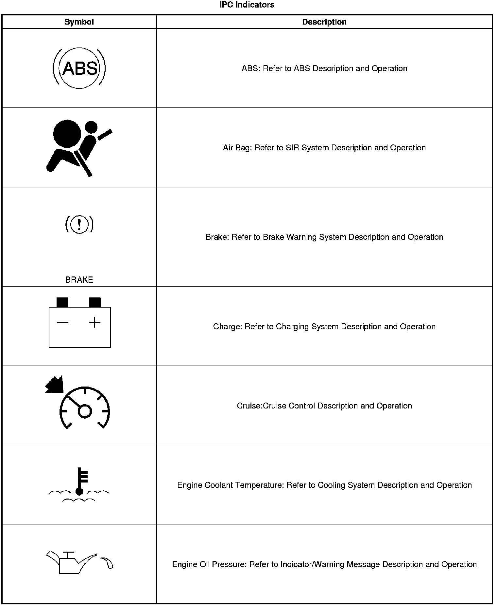
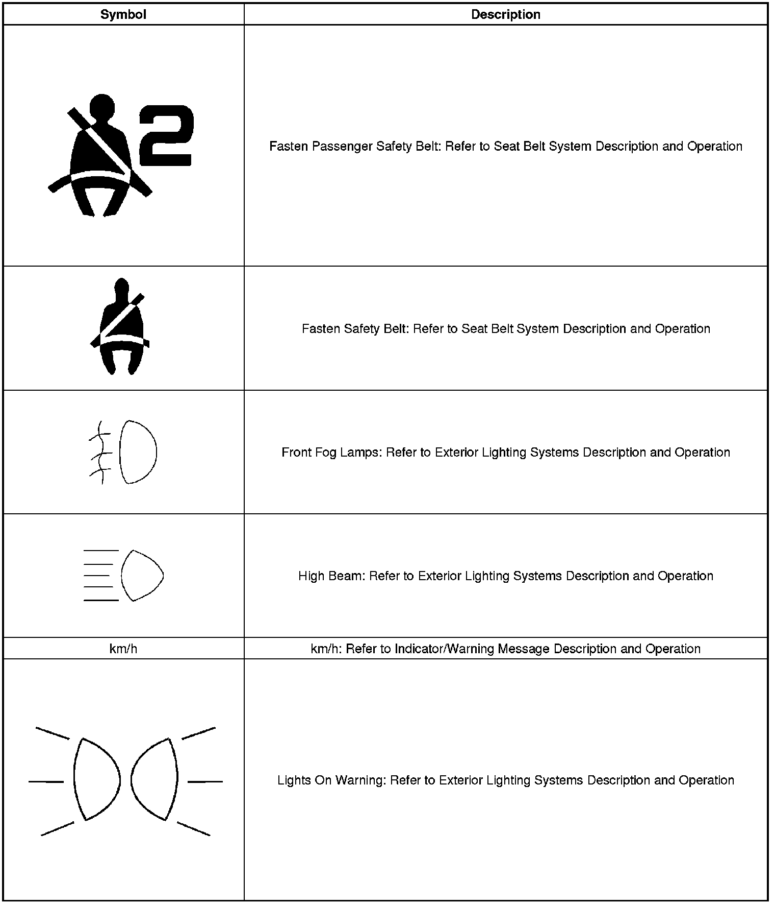
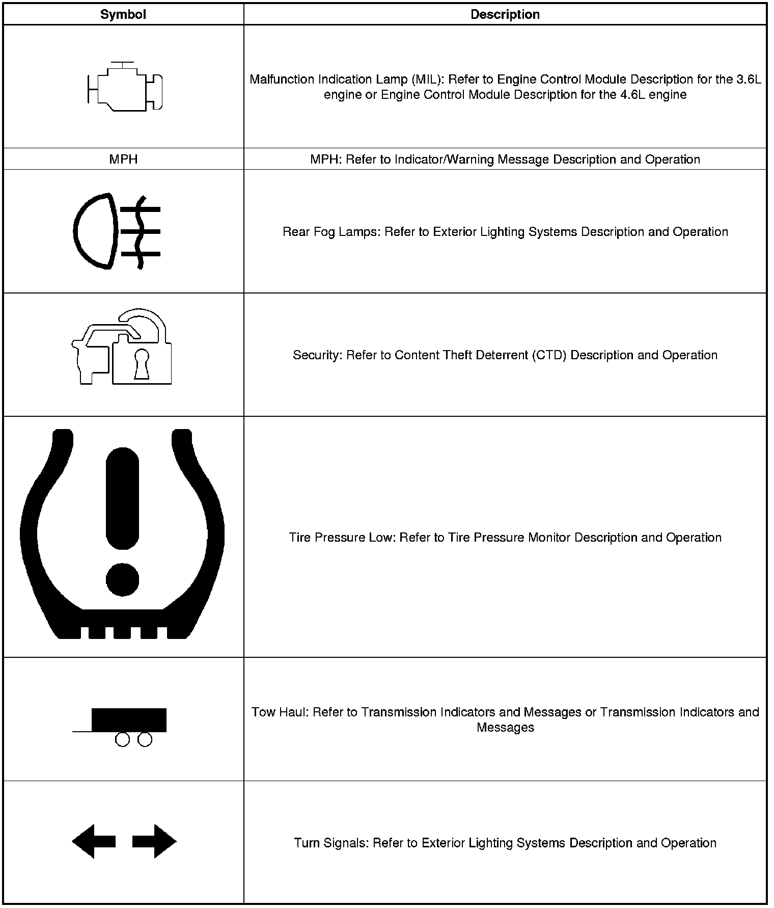
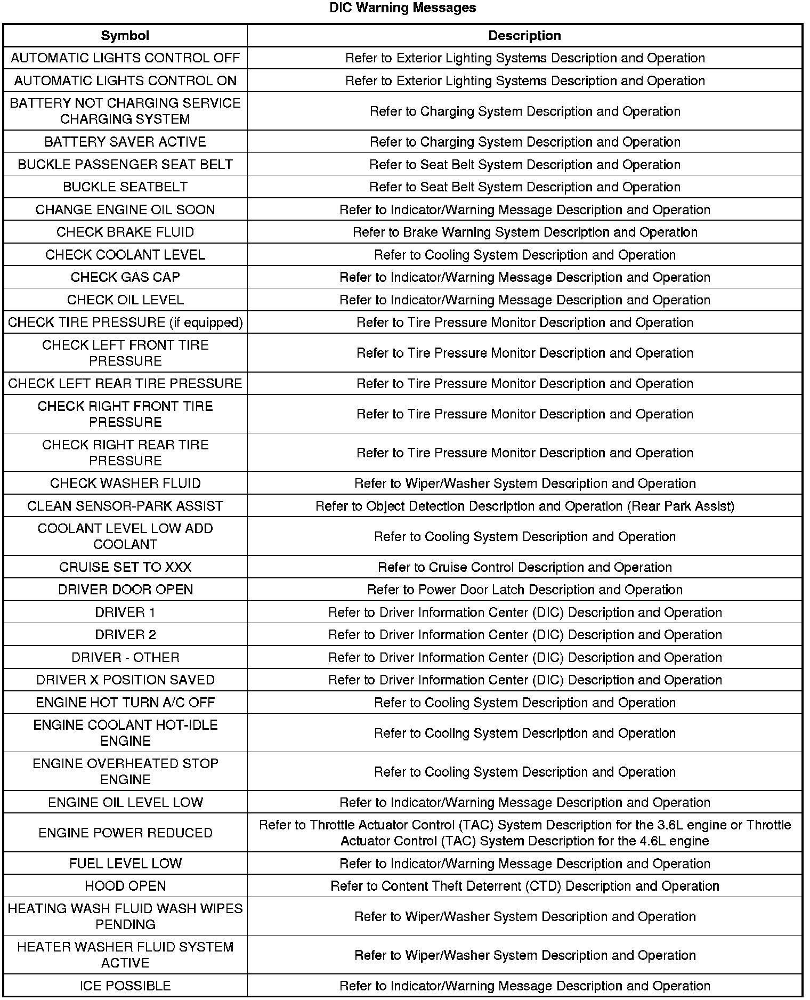
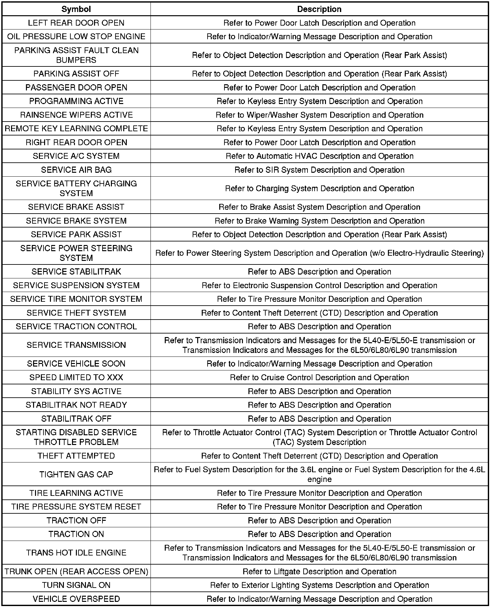
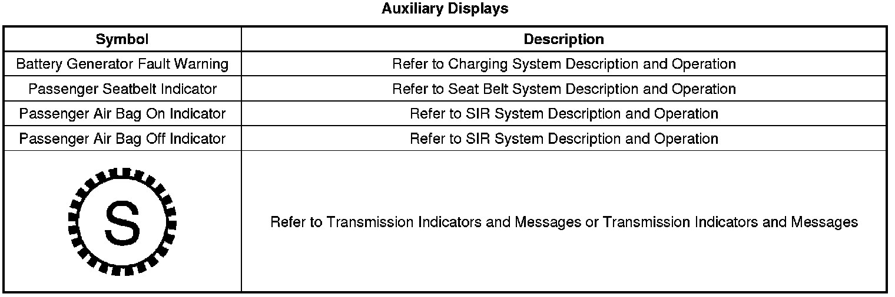

Indicator/Warning Message Description and Operation
Indicator/Warning Message Description and Operation








CHANGE ENGINE OIL
The driver information center (DIC) displays the CHANGE ENGINE OIL SOON message when the engine control module (ECM) determines that the engine oil life is below 5 percent. The ECM sends a serial data message to the instrument panel cluster (IPC) requesting the CHANGE ENGINE OIL message. After the oil is changed, reset the engine oil monitor. Refer to GM Oil Life System Resetting (Service and Repair) . Refer to the following before adding or changing engine oil:
* When the Low Engine Oil Level/Change Engine Oil Soon message displays in the IPC or DIC due to a low engine oil level condition, make sure that the ignition is turned OFF before adding or changing the oil in the vehicle. Failure to do so may result in the Low Engine Oil Level/Change Engine Oil Soon message staying on after the engine attains proper oil level.
* Before replacing the IPC because of the Low Engine Oil Level/Change Engine Oil Soon message staying ON after an oil change or engine oil addition, it is necessary for the engine to undergo a thermocycle process. The IPC may not be malfunctioning but only needs the Low Engine Oil Level/Change Engine Oil Soon to turn Off. After the oil is changed, reset the engine oil monitor. Refer to GM Oil Life System Resetting (Service and Repair) .
CHECK OIL LEVEL
The driver information center (DIC) displays CHECK OIL LEVEL message when the engine control module (ECM) detects a low engine oil level condition from the engine oil level sensor/switch. The instrument panel cluster (IPC) receives a serial data message indicating a low engine oil level condition. Refer to GM Oil Life System Resetting (Service and Repair) . Refer to the following before adding or changing engine oil:
* When the Low Engine Oil Level/Change Engine Oil Soon indicator displays in the IPC or DIC due to a low engine oil level condition, make sure that the ignition is turned OFF before adding or changing the oil in the vehicle. Failure to do so may result in the Low Engine Oil Level/Change Engine Oil Soon message staying on after the engine attains proper oil level.
* Before replacing the IPC because of the Low Engine Oil Level/Change Engine Oil Soon staying ON after an oil change or engine oil addition, it is necessary for the engine to undergo a thermocycle process. The IPC may not be malfunctioning but only needs the Low Engine Oil Level/Change Engine Oil Soon to turned off. After the oil is changed, reset the engine oil monitor. Refer to GM Oil Life System Resetting (Service and Repair) .
ENGINE OIL LEVEL LOW
The driver information center (DIC) displays ENGINE OIL LEVEL LOW message when the engine control module (ECM) detects a low engine oil level condition from the engine oil pressure (EOP) sensor/switch. The instrument panel cluster (IPC) receives a serial data message from the ECM requesting display of the low oil level message in the DIC.
Engine Oil Pressure
The instrument panel cluster (IPC) displays the engine oil pressure indicator as determined by the engine control module (ECM). The ECM monitors the engine oil pressure switch/sensor signal circuit to determine the engine oil pressure. The ECM sends the EOP information to the IPC via the serial data circuit. The IPC receives a serial data message from the BCM requesting display of the engine oil pressure indicator from the ECM.
FUEL LEVEL LOW
The driver information center (DIC) displays FUEL LEVEL LOW when the instrument panel cluster (IPC) determines that the fuel level is less than 7.84 percent. The IPC receives a serial data message indicating the fuel level from the engine control module (ECM).
ICE POSSIBLE
The driver information center (DIC) displays ICE POSSIBLE for 10 seconds when the outside air temperature drops below 2.0°C (36°F). The instrument panel cluster (IPC) receives a serial data message indicating the outside air temperature from the HVAC control module
km/h and MPH
km/h
- The instrument panel cluster (IPC) displays the km/h indicator when the cluster detects that Metric units have been requested.
MPH
- The IPC displays the MPH indicator when the cluster detects that English units have been requested.
OIL PRESSURE LOW
The driver information center (DIC) displays OIL PRESSURE LOW STOP ENGINE message when the engine control module (ECM) detects a low engine oil pressure condition from the engine oil pressure (EOP) sensor/switch. The instrument panel cluster (IPC) receives a GMLAN serial data message from the ECM requesting display of the low oil pressure message.
SERVICE VEHICLE SOON
The driver information center (DIC) displays SERVICE VEHICLE SOON message when the engine control module (ECM) detects certain malfunctions that are not related to the emissions system. The instrument panel cluster (IPC) receives a serial data message from the ECM or BCM requesting the display of SERVICE VEHICLE SOON message.
TIGHTEN GAS CAP
The driver information center (DIC) displays CHECK GAS CAP when the fuel tank cover is covered. The instrument panel cluster (IPC) receives a message from the engine control module (ECM) indicating the fuel tank cover needs to be closed.
VEHICLE OVERSPEED
The driver information center (DIC) displays VEHICLE OVERSPEED message when the instrument panel cluster (IPC) determines that the vehicle speed is more than 120 km/h (75 mph).